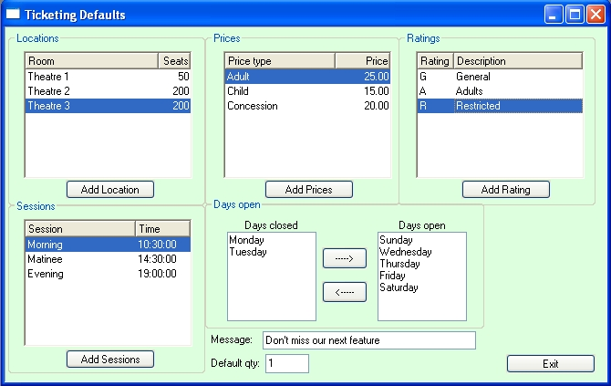
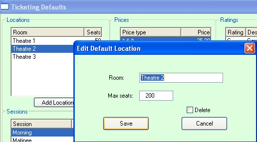
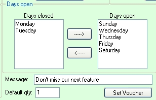

The ticketing module allows you to sell and print tickets for movies, shows, events and conference rooms through the Bookscan POS. You can have multiple price points (say adult, child, concession or A, A reserve, stalls), set the number of seats for the room or theatre, take reservations and sell movie vouchers of a set number of tickets. In Ticketing Maintenance you can set up schedules of shows or movies, etc in different venues and with different price points.
Say you are showing a movie for two weeks in your theatre #2 with 200 seats, one show a day and an extra matinee on Sundays, but you are closed Monday and Tuesday. The ticketing module has wizards to help you quickly set up this schedule.
Ticketing is licensed functionality. Contact Barcode Solutions to purchase a license.
Setting up
First you will need to set up some default settings. Open the Ticketing Defaults window from the main menu: Modules/ Tickets/ Ticket Defaults:

Here you can set up your locations (theatres, conference rooms etc), default prices, show ratings and default session times, and set the days you are usually open.
Locations
Here you can set up your theatres or conference rooms, and you can allocate the number of seats for each venue.
Click the Add Location button:

Enter a Room/venue name (e.g. Theatre 2). Enter the seating/capacity (e.g. 200).
Click the Save button.
To edit or delete a room, double click on it in the browser.
Ticket prices
You can set your default prices here, though you set different prices for each show as you set up your schedule if you wish.
To add a default price, click the Add Prices button.
Enter the Price description (e.g. Adult) and the price (e.g. 25.00).
Click the Save button.
Don't set up price points for vouchers and complimentary tickets. These are built into the program.
To edit or delete a price point, double click on it in the browser
Show ratings
You can set show ratings against movie (say, G, PG, M, MA,R and X). A ratings can be set against each show and will print on the ticket.
To add a rating, click on the Add rating button.
Enter the Rating code (e.g. PG) and a description (e.g. Parental Guidance).
Click Save button
To edit or delete a rating, double click on it in the browser
Session times
You can set your default session times here. Later you can allocate different session to different shows as you set them up.
To add a session, click on the Add Session button.
Enter a session name (e.g. Matinee) and select a session time (e.g. 13:00:00).
If session times don't really apply to your situation, or the times vary considerably, just create a single session. When creating a show, you can use this session and just change the time).
Days Open
Say you are showing a movie for two weeks, one show a day and an extra matinee on Sundays, but you are closed Monday and Tuesday. When you are creating the schedule, the program will create a session for each show against which you can sell tickets. So the program needs to know which days you are open.

To set the days you are opened or closed, double click on the day in one browser to move it to the other.
Default quantity
This is a default ticket quantity for each purchase made through the POS. Set it to either 1 or 2.
Ticket message
You can have a message print on your tickets. These can be set individually for each show or movie and are usually used to promote a future show or movie. You can set the default message here.
When you have set up your defaults, click Exit button; any changes you have made will be saved when exiting.
Ticketing Hardware Setup
The ticketing module is set up to use the Star TSP847c Thermal TSP 800 series printers. Contact Barcode Solutions about using other printers for your tickets.
To setup the printer for ticket printer, install the printer in MS Windows as a normal. Set the printer name, say 'Ticket'. You can install the Star TSP847c printer's drivers that come with the printer, but it can also be installed as a generic text windows printer.
Now set the printer up in Bookscan. Open System Options and select the System Tab. Click the Other Print Settings button. Enter the printer name ('Ticket' in the above example), into the Ticket Printer field. Click the OK button to save.